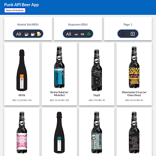

API Frontend App
This app provides a frontend application for the Punk API. The API, which I access through JavaScript's fetch function, returns JSON data on Brewdog brewery's catalogue of beers. Modern JavaScript is used to fetch and filter data from the API.
The beer database can be filtered by bitterness (measured in International Bitterness Units or IBU). The bitterness filter is represented by a hop cone SVG image - hop cones grow on a vine and are the brewing ingredient that provides bittering to beer. I've also built another frontend filter for alcoholic strength represented by the beer mug SVG. The filters use an input HTML element with an event listener that will update the fetch query parameters going to the API. This simplifies the user experience so they don't have to understand the query logic of the API. Pagination is accomplished in a similar manner
Template literals - another modern JavaScript feature - are used to render and update the DOM with the appropriate beer data fetched from the API. They provide an easy way to map the JSON data into the HTML. I really enjoy using template literals as they feel very familiar to writing code in Python. It makes the code much more readable, maintainable, and just friendly to work with.
Punk API Documentation
Brewdog Brewery
Modern JavaScript techniques such as fetch, arrow functions, async-await, destructuring, and template literals allow for more readable and therefore more maintainable code. All new code should be written with ES6 and above features (being mindful of browser support) while existing code should be refactored whenever possible.